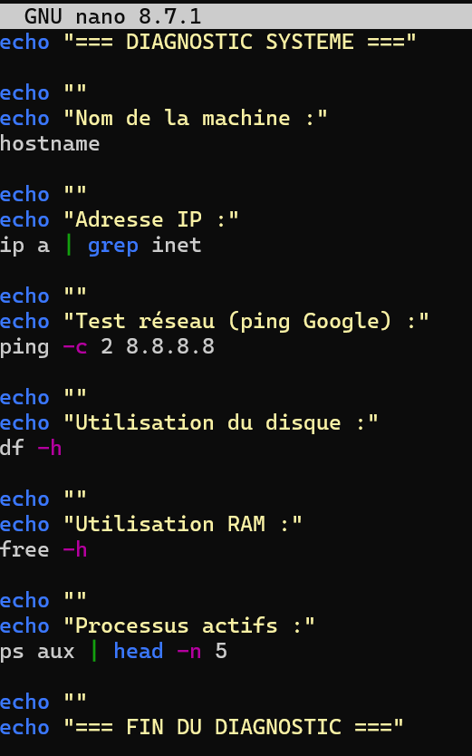

Script de diagnostic système Linux
Script Bash réalisé sous Linux via WSL permettant d'analyser automatiquement l'état d'une machine : nom de la machine, adresses IP, connectivité réseau, utilisation du disque, de la RAM et les processus actifs.
Pourquoi ce projet ?
Dans le cadre de ma formation BTS SIO option SISR, j'ai travaillé sur Linux via WSL. L'objectif était de créer un script Bash qui automatise le diagnostic d'un système — une tâche très courante en SISR lors d'interventions techniques sur des machines Linux. Plutôt que de taper les commandes une par une, le script les regroupe et les exécute automatiquement en une seule commande.
Ce que fait le script
🖥 Nom de la machine
Affiche le nom de la machine avec la commande hostname.
🌐 Adresse IP
Récupère les adresses IP de toutes les interfaces réseau avec ip a | grep inet.
📡 Test réseau
Teste la connectivité internet en envoyant 2 paquets vers 8.8.8.8 avec ping -c 2 8.8.8.8.
💾 Utilisation du disque
Affiche l'espace disque disponible sur chaque partition avec df -h.
🧠 Utilisation de la RAM
Affiche la mémoire totale, utilisée et disponible avec free -h.
⚙️ Processus actifs
Liste les 5 premiers processus en cours d'exécution avec ps aux | head -n 5.
Captures du projet
Code du script dans nano

Exécution — nom de machine, IP et test ping

Résultat — utilisation disque et RAM

Résultat — processus actifs et fin du diagnostic

Ce que j'ai appris
Scripting Bash
Écriture d'un script avec des commandes enchaînées et des messages d'affichage avec echo.
Commandes système Linux
Utilisation de commandes comme ip, ping, df, free et ps pour analyser l'état d'une machine.
Environnement WSL
Utilisation de Windows Subsystem for Linux pour travailler dans un environnement Linux depuis Windows.